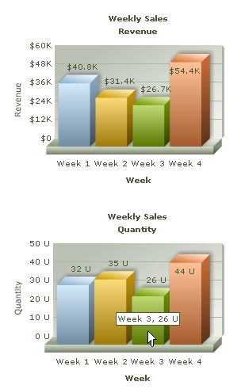

| Creating multiple charts in one page |
While developing web pages or applications, we might need to display multiple charts on the same page. For example, reporting Weekly Sales Quantity along with Revenue gives us a better insight. Let's see how we can accomplish this using FusionCharts PHP Class. The code below generates two Column 3D charts on the same page. |
| Before you go further with this page, we recommend you to see the previous page Creating First Chart as we start off from the concepts explained in that page. |
<?php
# Include FusionCharts PHP Class
include('../Class/FusionCharts_Gen.php');
//---------- Configuring First Chart ----------//
# Create Column3D chart object
$FC = new FusionCharts("Column3D","300","250");
# set the relative path of the SWF file
$FC->setSWFPath("../FusionCharts/");
# Store chart attributes in a variable
$strParam="caption=Weekly Sales;subcaption=Revenue;xAxisName=Week;yAxisName=Revenue;numberPrefix=$;decimalPrecision=0";
# Set chart attributes
$FC->setChartParams($strParam);
# Add chart values and category names for the First Chart
$FC->addChartData("40800","label=Week 1");
$FC->addChartData("31400","label=Week 2");
$FC->addChartData("26700","label=Week 3");
$FC->addChartData("54400","label=Week 4");
//---------------------------------------------------------
//---------- Configuring Second Chart ----------//
# Create another Column3D chart object
$FC2 = new FusionCharts("Column3D","300","250");
# set the relative path of the SWF file
$FC2->setSWFPath("../FusionCharts/");
# Store chart attributes in a variable
$strParam="caption=Weekly Sales;subcaption=Quantity;xAxisName=Week;yAxisName=Quantity;decimalPrecision=0";
# Set chart attributes
$FC2->setChartParams($strParam);
# Add chart values and category names for the second chart
$FC2->addChartData("32","label=Week 1");
$FC2->addChartData("35","label=Week 2");
$FC2->addChartData("26","label=Week 3");
$FC2->addChartData("44","label=Week 4");
// Set Chart Caching Off to Fix Caching error in FireFox
$FC2->setOffChartCaching(true);
//--------------------------------------------------------
?>
<html>
<head>
<title>First Chart Using FusionCharts PHP Class</title>
<script language='javascript' src='../FusionCharts/FusionCharts.js'></script>
</head>
<body>
<?php
# Render First Chart
$FC->renderChart();
# Render Second Chart
$FC2->renderChart();
?>
</body>
</html> |
Let's go through the steps involved in this code:
|
Please go through the FusionCharts PHP Class API Reference section to know more about the functions used in the above code. Here is the output. Both the charts have been rendered on same page. |
|  |
NOTE: PHP automatically generates an ID using Session and assigns it to the chart. This ID is generated using a counter variable kept in session. Hence, one every page refresh new ID will be assigned to chart. One should provide an ID, using the constructor function, if one wishes to interact with the chart later using JavaScript APIs like setDataXML(), setDataURL(), print(), saveAsImage(), etc. |